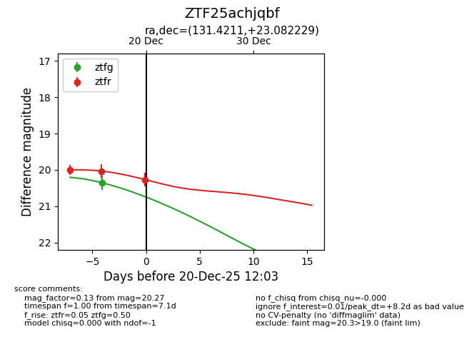
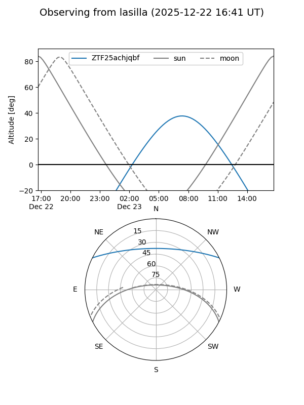
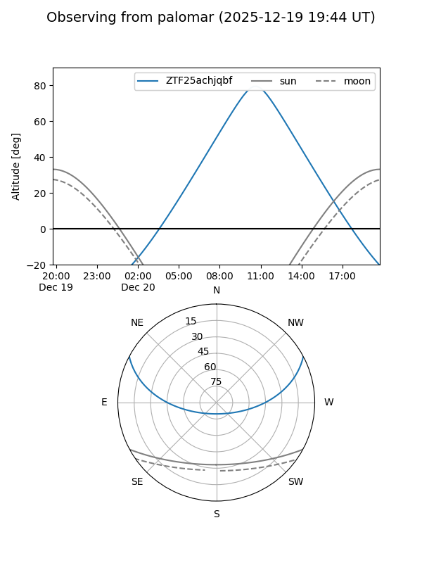
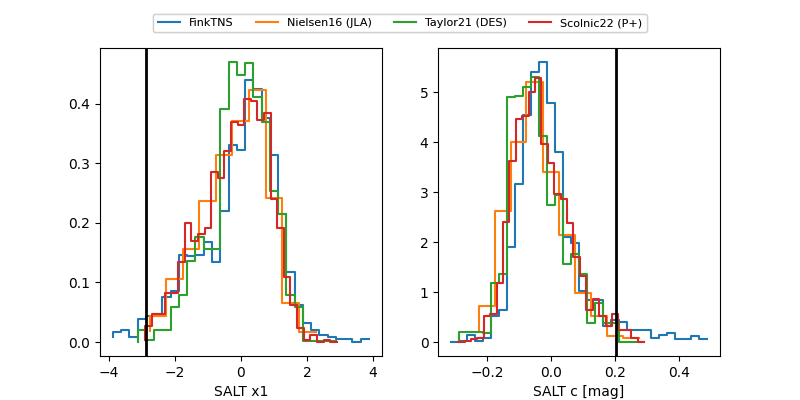

ZTF25achjqbf
Target ZTF25achjqbf at 2025-12-23 10:57
Aliases and brokers:
FINK: fink-portal.org/ZTF25achjqbf
Lasair: lasair-ztf.lsst.ac.uk/objects/ZTF25achjqbf
ALeRCE: alerce.online/object/ZTF25achjqbf
alt names
ZTF25achjqbf (ztf,fink_ztf)
Coordinates:
equatorial (ra, dec) = 131.4211,+23.08223
equatorial (HMS+DMS) = 08:45:41.07,+23:04:56.02
galactic (l, b) = (202.5269,+34.76499)
Flags:
Photometry:
last ztfg=20.35, ztfr=20.30
1 ztfg, 4 ztfr detections
Lightcurve

Visibility


Additional plots
